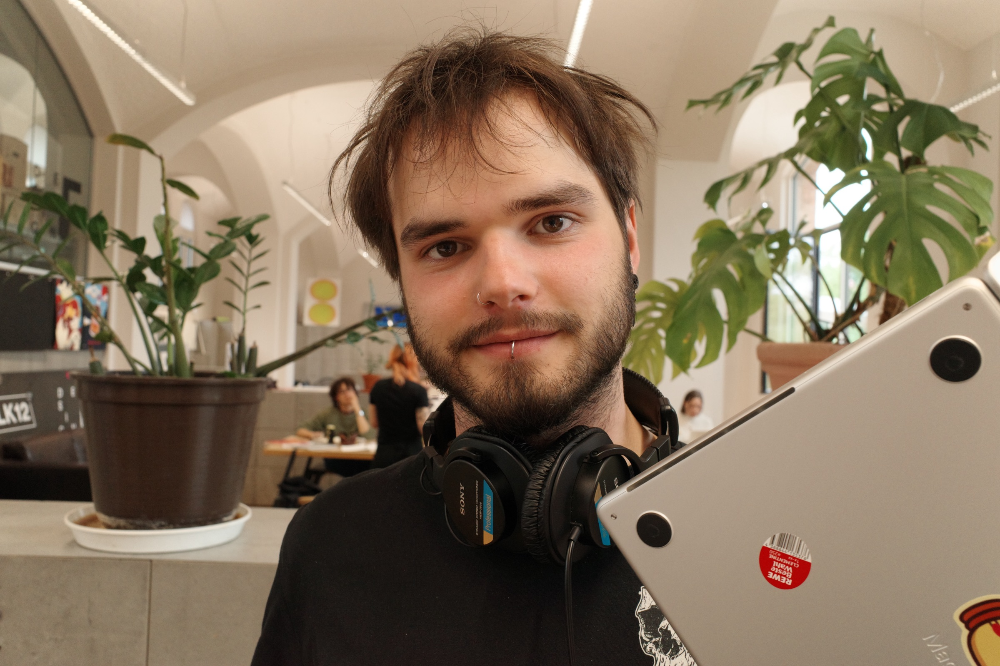
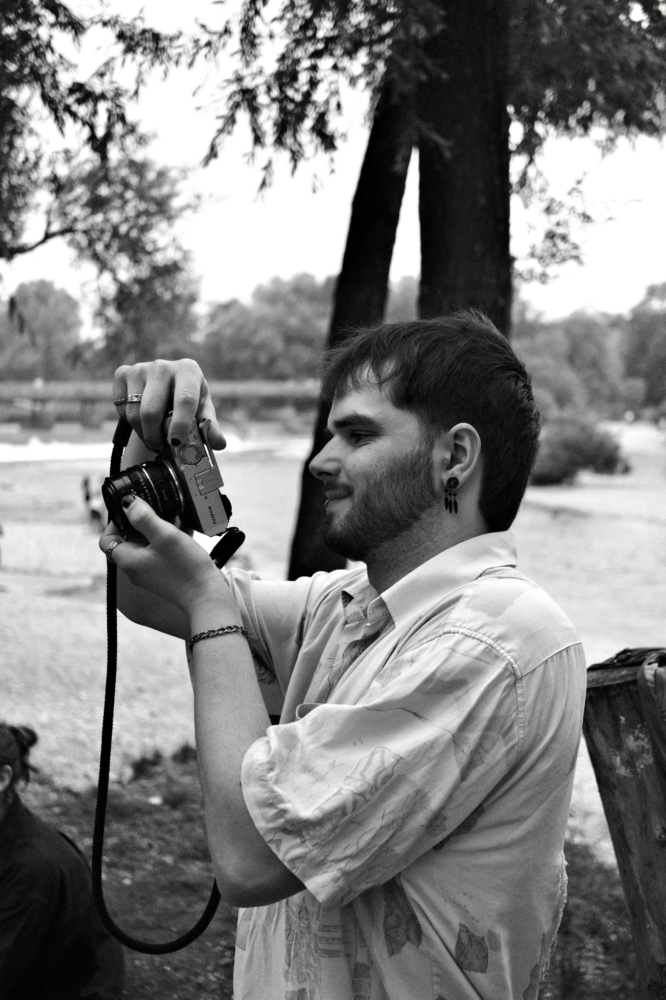

Fidelis Müller
Fotografie
Seit fünf Jahren fotografiere ich leidenschaftlich — und bin ein ziemlicher Kamera-Fanatiker.
Daneben studiere ich Informatik und Design. Meine Fotos entstehen meist für mich selbst oder für Freunde — ab und zu arbeite ich aber auch mit Musikern und Modedesignern zusammen.

